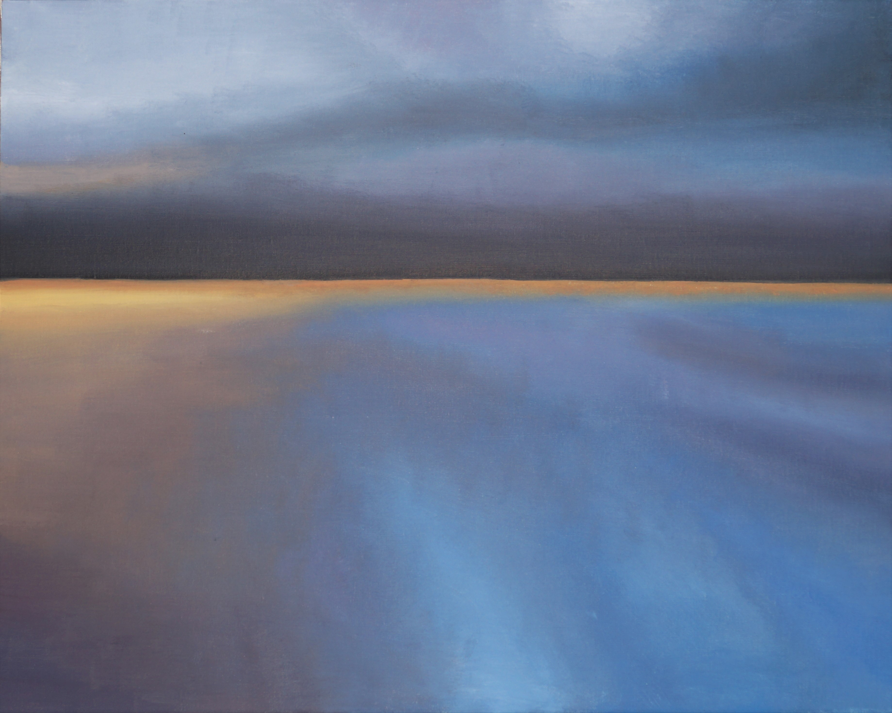
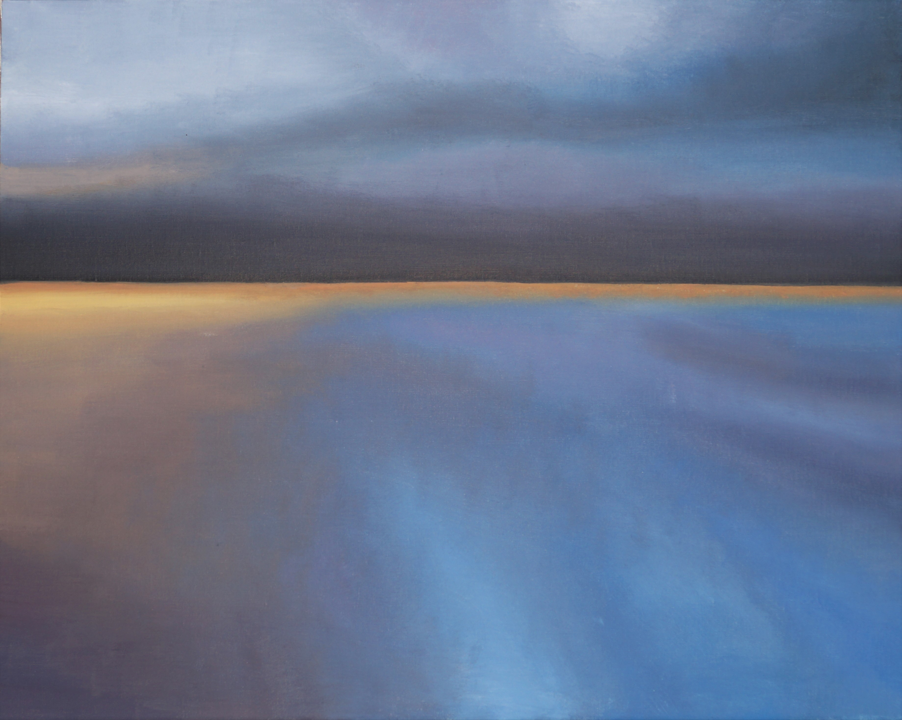
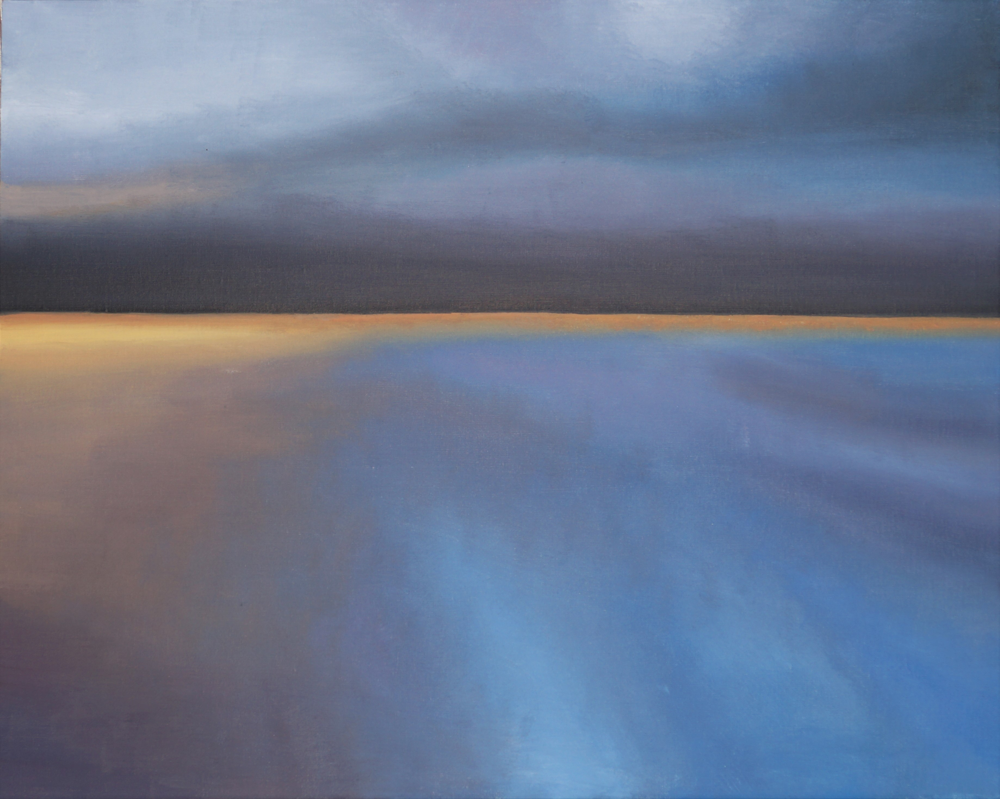

Галерея
Обо мне
Бескрайнее море

31.08.21 Холст на картоне 40х50, масло
Данная работа получилась совершенно неожиданно на одном дыхании. Хотелось
отобразить интересные переходы оттенков, глубину и объем пространства.
Поверхность воды светится синим цветом. Контрастной полосой тянется оранжевый
всполох света ушедшего заката. На горизонте сгущается чернота туч.
На полотне гармонично соседствует мрачный темно-синий и солнечный оранжевый.
Это вызывает у меня смешанные впечатления от работы. Сочетание умиротворения с
тревожным ожиданием неизвестного.
Быть может все потому, что картина была написна в последний день лета...
 

 31.08.21 Холст на картоне 40х50, масло
Данная работа получилась совершенно неожиданно на одном дыхании. Хотелось
31.08.21 Холст на картоне 40х50, масло
Данная работа получилась совершенно неожиданно на одном дыхании. Хотелось